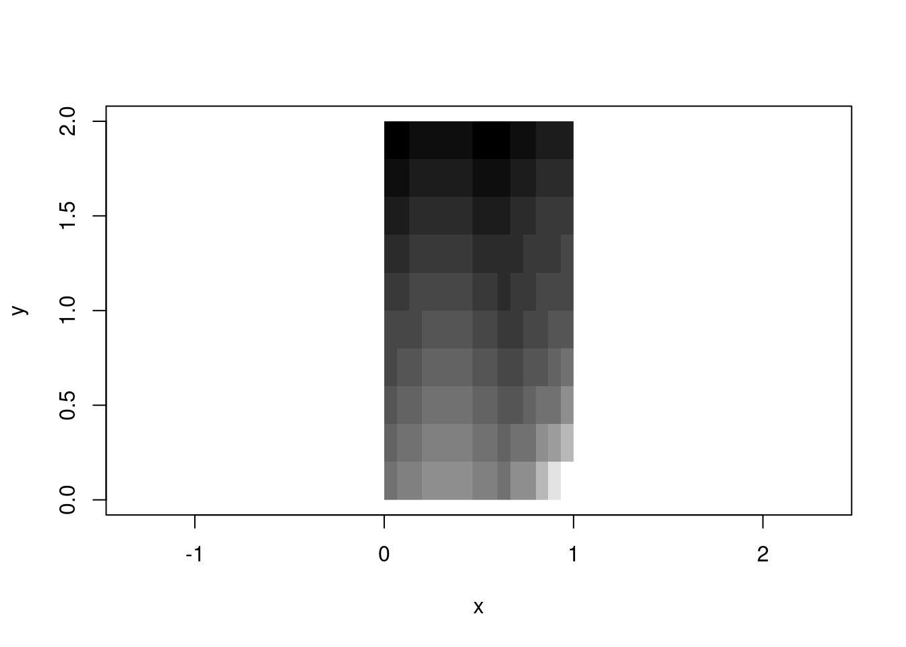
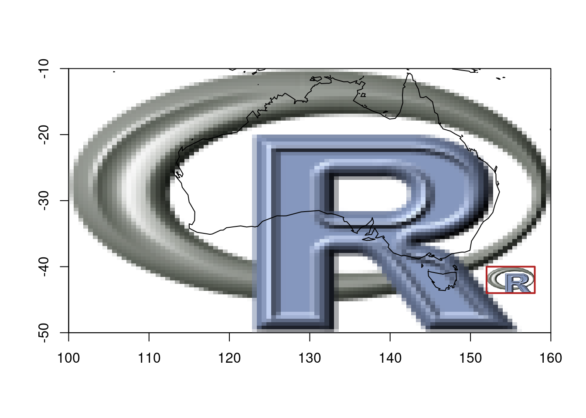
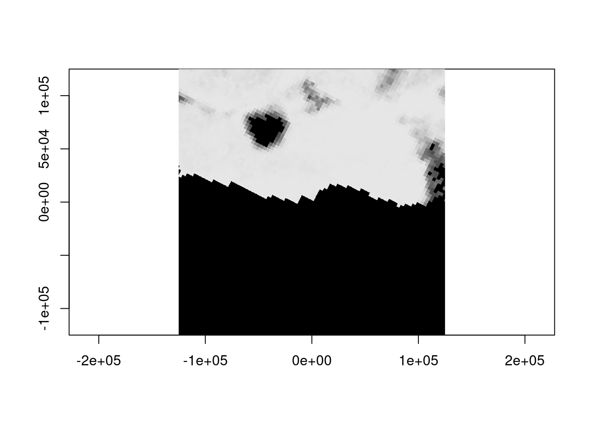

m <- volcano[1:10, 1:15]
x <- seq(0, 1, length.out = nrow(m) + 1)
y <- seq(0, 2, length.out = ncol(m) + 1)
image(x, y, m, col = terrain.colors(12))
Every geospatial package that works with grids has raster logic inside. The old {raster} package in R established powerful abstraction functions and now {terra} includes an improved suite of those, the {stars} package has its own internally, GDAL obviously uses these abstractions deeply, and xarray and many other Python packages also provide this. There is similar logic built into R’s matrix and array functions, its visualization image() function, and the newer rasterImage().
Is there a problem? This logic is almost always coupled to a data structure. You can’t use raster’s cellFromXY() without a RasterLayer. You can’t use terra’s xyFromCell() or cells() without a SpatRaster. Many packages have embedded this reinvented wheel, and to more or less degree lock the wheel inside a bigger machine.
The logic itself is beautifully simple: given a grid with certain dimensions (ncol, nrow) and a spatial extent (xmin, xmax, ymin, ymax, or identically ‘bbox’ xmin,ymin,xmax,ymax), you can compute everything else. Cell indices, row/column positions, coordinate centres and corners, cropping and snapping—all of it flows from six numbers and some basic arithmetic.
That’s what {vaster} extracts: the logic alone, without any data. (This logic of course is not especially 2D and extends into n-dimensional concepts as well illustrated by xarray and others, but please let’s park that from our discussion here.)
R’s base graphics already embody two distinct models for placing gridded data in space.
image() model: rectilinear coordinatesm <- volcano[1:10, 1:15]
x <- seq(0, 1, length.out = nrow(m) + 1)
y <- seq(0, 2, length.out = ncol(m) + 1)
image(x, y, m, col = terrain.colors(12))
The image() function takes explicit coordinate vectors for cell boundaries. This is the rectilinear model—you define where every edge falls. It’s flexible (cells don’t need to be square, or even uniform), but it means carrying around those vectors.
Notice x has nrow(m) + 1 elements, and y has ncol(m) + 1. These are edge coordinates, not centres. The function figures out that a 10×15 matrix needs 11×16 edges. (Centres are also a valid input for image(), it quietly handles either case of ‘n’ or ‘n+1’, note this has implications for interpretation of a grid but that takes us away from the main topic here).
rasterImage() model: bounding box placementplot(NA, xlim = c(0, 1), ylim = c(0, 2), asp = 1, xlab = "x", ylab = "y")
rasterImage(as.raster(scales::rescale(m)), xleft = 0, ybottom = 0, xright = 1, ytop = 2, interpolate = F)
The rasterImage() function takes a different approach: you hand it an image and four numbers defining the bounding box. The function stretches or compresses the image to fit. This is the affine model—the grid is implicitly regular within the box.
These two models are part of a foundation of all raster handling. GeoTIFFs use the affine model (extent + dimension → implicit coordinates). NetCDF often uses the rectilinear model (explicit coordinate arrays). Both are valid; both are useful; both involve the same underlying logic.
There’s a sort of frustration in base with image() and rasterImage(), each has features the other lacks. image() handles numeric data with colour palettes and is geared to R’s matrix orientation, can create a plot or add to an existing one, but by default will draw into a unit square. rasterImage() handles the orientation more aligned to external raster data and graphics, but only works with unit-scaled data or pre-rendered images—no palette mapping, and no plot creation (only adding to an existing plot) .
ximage merges the features of both into one function that uses the rasterImage orientation:
library(ximage)
library(vaster)
## Plot numeric data in GIS orientation with extent
ximage(volcano, extent = c(0, 61, 0, 87), col = terrain.colors(24))
## Add contours that respect the same extent
xcontour(volcano, extent = c(0, 61, 0, 87), add = TRUE, levels = c(120, 140, 160))
## Or RGB arrays, or nativeRaster, or hex colours—all work
img <- png::readPNG(system.file("img", "Rlogo.png", package="png"), native = TRUE)
ximage(img, extent = c(100, 160, -50, -10))
maps::map(add = TRUE)
## nonsensical map, but we can do what we want and maps why not
# they can be fun and used with non spatial data too
ximage(img, extent = c(152, 158, -44, -40), add = TRUE)
plot_extent(c(152, 158, -44, -40), add = TRUE, border = "firebrick", lwd = 2)
Once we separate the data (a matrix of values) from the placement (extent as four numbers), you can handle any input type with the same logic. The orientation confusion disappears because {ximage} adopts the rasterImage convention—the one that matches how GDAL and every other geospatial tool returns data.
This is {vaster}’s philosophy applied to plotting: the spatial meaning comes from the six numbers (dimension + extent), not from the data structure.
{vaster} gives that underlying logic with no attachment to any data format or structure. All you need are dimension and extent (and extent is optional, a sensible default is [0,nx], [0,ny] rather than unit-square).
library(vaster)
dm <- c(40, 20) # ncol, nrow
ex <- c(100, 160, -50, -10) # xmin, xmax, ymin, ymax
# Cell centres - implicit from dimension and extent
x_centre(dm, ex) [1] 100.75 102.25 103.75 105.25 106.75 108.25 109.75 111.25 112.75 114.25
[11] 115.75 117.25 118.75 120.25 121.75 123.25 124.75 126.25 127.75 129.25
[21] 130.75 132.25 133.75 135.25 136.75 138.25 139.75 141.25 142.75 144.25
[31] 145.75 147.25 148.75 150.25 151.75 153.25 154.75 156.25 157.75 159.25y_centre(dm, ex) [1] -49 -47 -45 -43 -41 -39 -37 -35 -33 -31 -29 -27 -25 -23 -21 -19 -17 -15 -13
[20] -11What cell contains a given point?
# Some arbitrary coordinates
pts <- cbind(x = c(120.5, 145.2, 110.8),
y = c(-25.3, -42.1, -15.7))
cell_from_xy(dm, ex, pts)[1] 294 671 88What are the coordinates of cells 1, 100, and 800?
xy_from_cell(dm, ex, c(1, 100, 800)) [,1] [,2]
[1,] 100.75 -11
[2,] 129.25 -15
[3,] 159.25 -49Convert between row/column and cell index:
# Cell to row, column
cell <- 42
row_from_cell(dm, cell)[1] 2col_from_cell(dm, cell)[1] 2# Row, column to cell
cell_from_row_col(dm, row = 3, col = 15)[1] 95None of this requires loading imagery or touching files. It’s pure computation from first principles.
Note here that indexing is via R’s convention: 1-based, both for cell and row and col.
One of the most common operations in raster work is “snapping”—taking an arbitrary region and aligning it to an existing grid. You want to crop to an area of interest, but you need cell-aligned boundaries.
# A reference grid: 3-degree cells covering the globe
ref_dm <- c(30, 10)
ref_ex <- c(-180, 180, -90, 90)
# Some arbitrary region of interest (not aligned to anything)
roi <- c(15, 154.7, -44.2, -9.8)
# Snap to the reference grid
snapped <- vcrop(roi, ref_dm, extent = ref_ex)
snapped$extent
[1] 12 156 -54 0
$dimension
[1] 12 3The result gives you the exact dimension and extent for the crop window, aligned to the reference grid. No data needed—just the numbers.
plot_extent(ref_ex, border = "grey")
abline(v = x_corner(ref_dm, ref_ex), col = "grey90")
abline(h = y_corner(ref_dm, ref_ex), col = "grey90")
# Original ROI (arbitrary)
plot_extent(roi, border = "red", lwd = 2, add = TRUE)
# Snapped ROI (grid-aligned)
plot_extent(snapped$extent, border = "blue", lwd = 2, add = TRUE)
The red box is what we asked for; the blue box is what we get when we respect the grid alignment.
GDAL uses a six-element “geotransform” to encode the affine relationship between pixel coordinates and geographic coordinates. This is the workhorse of georeferenced raster data. {vaster} speaks this language:
# From extent and dimension to geotransform
gt <- extent_dim_to_gt(ex, dm)
gt xmin xres yskew ymax xskew yres
100.0 1.5 0.0 -10.0 0.0 -2.0 # And back again
gt_dim_to_extent(gt, dm)xmin xmin ymax ymax
100 160 -50 -10 This matters when you’re working directly with GDAL (via {gdalraster}, {vapour}, or Python’s osgeo.gdal) and need to set up or interpret raster metadata without constructing heavyweight objects.
Lightweight tooling: Sometimes we just need to compute cell indices or snap extents. We shouldn’t need to load terra or GDAL for that.
Cross-package compatibility: The logic is the same whether you’re working with terra, stars, GDAL, or raw arrays. Having it in one place means consistent behaviour everywhere.
Teaching and understanding: Separating the logic from the data makes it clearer what raster operations actually do. The magic isn’t in the file format or the object class—it’s in the relationship between dimension and extent.
Once you separate grid logic from data, interesting things become possible. Here are three packages that build on this foundation, taken (ahem) shamelessly from the hypertidy suite. (I’m not ignoring other important packages in R and Python that use these ideas, but these are chosen to focus on the core idea of what vaster is and why it exists. )
fasterize is a high-performance replacement for raster::rasterize(). It uses the classic scanline algorithm to burn polygons onto a grid. The original fasterize required an actual RasterLayer as a template—not for its data, but for its six numbers (dimension and extent).
## fasterize needs a "raster", but really it just needs dimension + extent
library(fasterize)
r <- raster::raster(ncol = 1000, nrow = 800,
xmn = 0, xmx = 100, ymn = 0, ymx = 80)
result <- fasterize(polygons_sf, r, field = "value")The raster object is just a vessel for grid metadata, but fasterize also will create an actual numeric matrix in memory - so it has these two limitations at input and output. With raster logic available separately, we can drive the same algorithm with nothing but numbers.
controlledburn takes the fasterize algorithm and strips away the last step: instead of filling a raster with values, it returns the indices of which cells each polygon covers. The output is run-length encoded scanline segments—start, end, row, polygon_id.
library(controlledburn)
library(vaster)
## Define a grid with just numbers
ext <- c(100, 160, -50, -10)
dm <- c(500, 400)
## Get the cell coverage index, not pixel values
idx <- burn_polygon(polygons_sf, extent = ext, dimension = dm)For a 500,000 × 400,000 grid, materializing a raster would require terabytes. But storing the polygon coverage as run-length scanline indices? Tens of megabytes for typical distributions that real world polygons embody. The grid logic is the same—only the output changes.
This is the “cell abstraction” always implicit in raster operations. We can use these indices for extraction, for streaming aggregation, for anything that doesn’t require all pixels to exist at once.
grout applies the same principle to tiling. Given a grid’s dimension and extent, plus a block size, it computes the complete tiling scheme: how many tiles, where each one falls, how much overlap (“dangle”) occurs when dimensions don’t divide evenly.
library(grout)
## A raster that's 87 × 61 with 8 × 8 tiles
scheme <- grout(c(87, 61), extent = c(0, 87, 0, 61), blocksize = c(8, 16))
scheme tiles: 4, 11 (x * y = 44)
block: 8, 16
dangle: 1, 3
tile resolution: 8, 16
tile extent: 0, 88, -3, 61 (xmin,xmax,ymin,ymax)
grain: 8, 16 (8 : x, 16 : y)## Get offset/size for each tile (for GDAL RasterIO)
dplyr::glimpse(tile_index(scheme))Rows: 44
Columns: 11
$ tile <int> 1, 2, 3, 4, 5, 6, 7, 8, 9, 10, 11, 12, 13, 14, 15, 16, 17, 18…
$ offset_x <dbl> 0, 8, 16, 24, 32, 40, 48, 56, 64, 72, 80, 0, 8, 16, 24, 32, 4…
$ offset_y <dbl> 0, 0, 0, 0, 0, 0, 0, 0, 0, 0, 0, 16, 16, 16, 16, 16, 16, 16, …
$ tile_col <dbl> 1, 2, 3, 4, 5, 6, 7, 8, 9, 10, 11, 1, 2, 3, 4, 5, 6, 7, 8, 9,…
$ tile_row <dbl> 1, 1, 1, 1, 1, 1, 1, 1, 1, 1, 1, 2, 2, 2, 2, 2, 2, 2, 2, 2, 2…
$ ncol <dbl> 8, 8, 8, 8, 8, 8, 8, 8, 8, 8, 7, 8, 8, 8, 8, 8, 8, 8, 8, 8, 8…
$ nrow <dbl> 16, 16, 16, 16, 16, 16, 16, 16, 16, 16, 16, 16, 16, 16, 16, 1…
$ xmin <dbl> 0, 8, 16, 24, 32, 40, 48, 56, 64, 72, 80, 0, 8, 16, 24, 32, 4…
$ xmax <dbl> 8, 16, 24, 32, 40, 48, 56, 64, 72, 80, 87, 8, 16, 24, 32, 40,…
$ ymin <dbl> 45, 45, 45, 45, 45, 45, 45, 45, 45, 45, 45, 29, 29, 29, 29, 2…
$ ymax <dbl> 61, 61, 61, 61, 61, 61, 61, 61, 61, 61, 61, 45, 45, 45, 45, 4…No data loaded. No files opened. Just the arithmetic of how a grid subdivides. This is exactly what you need to drive tiled reading from GDAL, or to generate web map tile pyramids, or to parallelize processing across spatial chunks.
All three packages share a design principle: the grid specification is just six numbers, and most operations don’t need anything else.
{fasterize} showed that fast rasterization doesn’t need heavy objects—just geometry and grid metadata. {controlledburn} showed you don’t even need to materialize pixels—indices are enough. {grout} showed that tiling is pure arithmetic on dimension and extent.
{vaster} is the foundation that makes this all clean. Instead of each package reinventing cellFromXY() and friends, they can share a common vocabulary for grid logic.
The Python geospatial ecosystem has grappled with the same issues that motivated {vaster}.
A recent pangeo discussion compared odc.stac and stackstac—two packages for loading satellite imagery into xarray. Despite ostensibly doing the same thing, they produce different results. Why?
Pixel coordinates: edge or centre? When you say a pixel is at coordinate (100.0, 200.0), do you mean that’s its centre, or its top-left corner? odc.stac defaults to centre, stackstac defaults to edge. Both are valid conventions; GIS tools tend toward corners, while climate/ocean data tends toward centres. But if you don’t know which convention your tool uses, your data shifts by half a pixel.
Coordinate snapping: When your requested bounding box doesn’t align perfectly with the source grid, what happens? Different tools make different choices about how to snap—and those choices are usually invisible, buried in the library internals.
These are exactly the questions {vaster} makes explicit. Dimension and extent. Corner or centre. Snap in or snap out. The logic is universal; only the defaults vary.
The xarray team recently announced flexible indexing, including a RasterIndex that computes coordinates on-the-fly from an affine transform rather than storing explicit coordinate arrays. Sound familiar?
From the post:
For 2D raster images, this function often takes the form of an Affine Transform. The rasterix library extends Xarray with a RasterIndex which computes coordinates for geospatial images such as GeoTiffs via Affine Transform.
This is the same insight: coordinates are implicit in dimension and extent. You don’t need to materialize a 7-terabyte coordinate array when six numbers suffice. The xarray team is building infrastructure for raster grid logic itself.
The Python ecosystem will align around this conceptual foundation—grid logic as well as R and other language.
R’s matrices already have most of this logic, just without the spatial semantics. A matrix has dimension (nrow, ncol). When you use image() with explicit coordinates, you’re adding extent. The [i, j] indexing is cell-from-row-column. which(m > threshold, arr.ind = TRUE) gives you row-column-from-cell.
{vaster} makes this connection explicit. It treats dimension and extent as first-class inputs, just as R treats matrices as first-class objects. The spatial meaning is in the numbers, not the container.
Enough theory! Let’s make a map. The following string defines a huge world-coverage image server.
dsn <- "WMTS:https://services.arcgisonline.com/arcgis/rest/services/World_Imagery/MapServer/WMTS/1.0.0/WMTSCapabilities.xml,layer=World_Imagery"So, obviously we need a huge stack of Python geospatial to make a map image … or maybe we can just use generic tools and do it in R.
We’re using {gdalraster} here because it’s the thinnest wrapper over the GDAL API, but the same calls work through {terra}, {vapour}, or Python’s osgeo.gdal. The point isn’t the package — it’s that the interface is just numbers and strings. I’m still using a mix of tools and plotting … but that’s life.
library(gdalraster)
library(ximage)
ds <- new(GDALRaster, dsn) ## same as terra::rast(dsn) or osgeo.gdal.Open(dsn) or rioxarray.open_rasterio(dsn)
dsC++ object of class GDALRaster
Driver : OGC Web Map Tile Service (WMTS)
DSN : WMTS:https://services.arcgisonline.com/arcgis/rest/services/World_Imagery/MapServer/WMTS/1.0.0/WMTSCapabilities.xml,layer=World_Imagery
Dim : 1073741766, 1070224430, 4
CRS : WGS 84 / Pseudo-Mercator (EPSG:3857)
Res : 0.037323, 0.037323
Bbox : -20037507.260427, -19971868.890929, 20037507.248165, 19971868.903191We don’t want the whole world and certainly not that much detail, how about Mawson Station in Antarctica, Mawson is at approximately 62.87E and -67.6S.
We should define a local equal area projection, on Mawson.
prj <- "+proj=laea +lon_0=62.8742 +lat_0=-67.6033"What is the right extent or bbox for that projection? It’s just metres around the zero-point, let’s go with a range.
b <- 125000
tfile <- tempfile(tmpdir = "/vsimem", fileext = ".vrt") ## use GDAL to manage IO and cleanup, same in other tools
chk <- warp(dsn, tfile, t_srs = prj, cl_arg = c("-te", -b, -b, b, b, "-ts", 1024, 0))0...10...20...30...40...50...60...70...80...90...100 - done.ximage(read_ds(new(GDALRaster, tfile), bands = 1:3), asp = 1)
What about a different data source, can we see any meaningful data in sea ice at this time of year?
icedsn <- "/vsicurl/https://data.seaice.uni-bremen.de/amsr2/asi_daygrid_swath/s3125/2025/dec/Antarctic3125/asi-AMSR2-s3125-20251220-v5.4.tif"
tfile <- tempfile(tmpdir = "/vsimem", fileext = ".vrt")
chk <- warp(icedsn, tfile, t_srs = prj, cl_arg = c("-te", -b, -b, b, b, "-ts", 1024, 0))0...10...20...30...40...50...60...70...80...90...100 - done.dat <- read_ds(new(GDALRaster, tfile), bands = 1)
dat[dat > 100] <- NA
ximage(dat, col = grey.colors(100), asp = 1)
summary(dat) Min. 1st Qu. Median Mean 3rd Qu. Max. NA's
1.00 94.00 98.00 90.99 100.00 100.00 576851 Not unexpectedly at 3.125km resolution it’s a bit sparse on information, but we didn’t have to use a different approach to get coincident data. The ice is thick here, to see Mawson at about this time from Sentinel 2 imagery, try the estinel catalog, click ‘ESA’ and zoom around for more, you’ll see that dark hole in the sea ice).
What about the bathymetry? Even at this scale we can see the disparity between bathymetric and topographic detail.
bathdsn <- "/vsicurl/https://projects.pawsey.org.au/idea-gebco-tif/GEBCO_2024.tif"
tfile <- tempfile(tmpdir = "/vsimem", fileext = ".vrt")
chk <- warp(bathdsn, tfile, t_srs = prj, cl_arg = c("-te", -b, -b, b, b, "-ts", 1024, 0))0...10...20...30...40...50...60...70...80...90...100 - done.ximage(dat <- read_ds(new(GDALRaster, tfile), bands = 1), col = hcl.colors(128), asp = 1)
Let’s zoom right in, and this time we’ll use terra so that adding contours is easy, read the REMA v2 2m topography and add it as contours.
b <- 3000
tfile <- tempfile(tmpdir = "/vsimem", fileext = ".vrt")
chk <- warp(dsn, tfile, t_srs = prj, cl_arg = c("-te", -b, -b, b, b, "-ts", 1024, 0))0...10...20...30...40...50...60...70...80...90...100 - done.ximage(read_ds(new(GDALRaster, tfile), bands = 1:3), asp = TRUE)
remadsn <- "/vsicurl/https://raw.githubusercontent.com/mdsumner/rema-ovr/main/REMA-2m_dem_ovr.vrt"
library(terra)
r <- rast(ext(-b, b, -b, b), crs = prj, ncols = 1024, nrows = 1024)
tfile <- tempfile(tmpdir = "/vsimem", fileext = ".vrt")
chk <- warp(remadsn, tfile, t_srs = prj, cl_arg = c("-te", -b, -b, b, b, "-ts", 1024, 1024))0...10...20...30...40...50...60...70...80...90...100 - done.rema <- read_ds(new(GDALRaster, tfile), bands = 1)
contour(setValues(r, rema), add = TRUE)
Note that throughout we’ve done no juggling of input coverage or extent or determining output resolution - we ask GDAL for “enough pixels” to see, because that’s what we’re doing and it sorts that out. Reading enough pixels for a view from an efficient data source takes very little time, with raster logic as a core guideline it also takes very little time to craft our scripts.
Hopefully this sparks some interest in the simplicity of raster grid logic and more use of the GDAL warp api to its full potential. Please contact me if you have any interest or questions.
https://github.com/hypertidy/vaster/issues
sessionInfo()R version 4.5.1 (2025-06-13)
Platform: x86_64-pc-linux-gnu
Running under: Ubuntu 22.04.5 LTS
Matrix products: default
BLAS: /usr/lib/x86_64-linux-gnu/openblas-pthread/libblas.so.3
LAPACK: /usr/lib/x86_64-linux-gnu/openblas-pthread/libopenblasp-r0.3.20.so; LAPACK version 3.10.0
locale:
[1] LC_CTYPE=en_AU.UTF-8 LC_NUMERIC=C
[3] LC_TIME=en_AU.UTF-8 LC_COLLATE=en_AU.UTF-8
[5] LC_MONETARY=en_AU.UTF-8 LC_MESSAGES=en_AU.UTF-8
[7] LC_PAPER=en_AU.UTF-8 LC_NAME=C
[9] LC_ADDRESS=C LC_TELEPHONE=C
[11] LC_MEASUREMENT=en_AU.UTF-8 LC_IDENTIFICATION=C
time zone: Etc/UTC
tzcode source: system (glibc)
attached base packages:
[1] stats graphics grDevices utils datasets methods base
other attached packages:
[1] grout_0.0.2.9009 ximage_0.0.0.9012 gdalraster_2.3.0.9007
[4] terra_1.8-80 vaster_0.5.0
loaded via a namespace (and not attached):
[1] bit_4.6.0 jsonlite_2.0.0 dplyr_1.1.4 compiler_4.5.1
[5] maps_3.4.1.1 tidyselect_1.2.1 Rcpp_1.1.0 xml2_1.5.1
[9] palr_0.4.0 nanoarrow_0.7.0-2 parallel_4.5.1 dichromat_2.0-0.1
[13] scales_1.4.0 png_0.1-8 yaml_2.3.10 fastmap_1.2.0
[17] R6_2.6.1 generics_0.1.4 yyjsonr_0.1.21 knitr_1.50
[21] htmlwidgets_1.6.4 tibble_3.3.0 pillar_1.11.1 RColorBrewer_1.1-3
[25] rlang_1.1.6 xfun_0.53 bit64_4.6.0-1 cli_3.6.5
[29] magrittr_2.0.4 wk_0.9.4.9000 digest_0.6.39 rstudioapi_0.15.0
[33] rappdirs_0.3.3 lifecycle_1.0.4 vctrs_0.6.5 evaluate_1.0.5
[37] glue_1.8.0 farver_2.1.2 codetools_0.2-19 rmarkdown_2.29
[41] pkgconfig_2.0.3 tools_4.5.1 htmltools_0.5.8.1